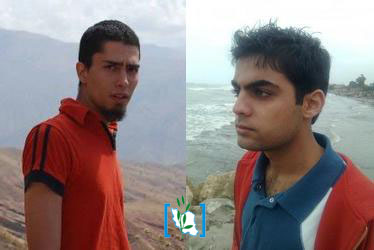

|
|

اجرای حکم شش ماه زندان علیرضا فیروزی و سورنا هاشمی
شنبه7 خرداد 1390
رهانا: علیرضا فیروزی و سورنا هاشمی دانشجویان محروم از تحصیل دانشگاه زنجان بودند که پس از افشای موارد اخلاقی یکی از مسئولان دانشگاه (مددی) بازداشت و دورهای را در زندان سپری کرده بودند. سورنا هاشمی از اعضای دانشجویان لیبرال و علیرضا فیروزی فعال حقوق بشر و روزنامه نگار و وبلاگ نویس مستقل است.
به گزارش «خانه حقوق بشر ایران» این دو فعال دانشجویی بامداد امروز برای اجرای حکم زندان خود که بنابر احضار آنان صورت گرفته بود، به زندان اوین رفتند.
فیروزی و هاشمی در دادگاه بدوی به یک سال و نیم زندان محکوم شده بودند که این حکم بعد از بررسی در دادگاه تجدید نظر به ۶ ماه زندان کاهش پیدا کرد. این دو یک ماه نیز به خاطر این پرونده در بازداشت به سر برده بودند.
لازم به یادآوری است که فیروزی و هاشمی در تاریخ ۱۲ دی ماه سال ۸۸ نیز در ارومیه بازداشت و نزدیک به دو ماه از وضعیت آنان اطلاعی در دست نبود، تا اینکه بعد از ۷۰ روز از زندان اوین با خانوادههای خود تماس گرفتند. سورنا هاشمی در تاریخ ۱۵ فروردین ماه ۸۹ و علیرضا فیروزی در تاریخ ۲۲ اردیبهشت ماه سال ۸۹ با تودیع قرار وثیقه از زندان آزاد شده بود.